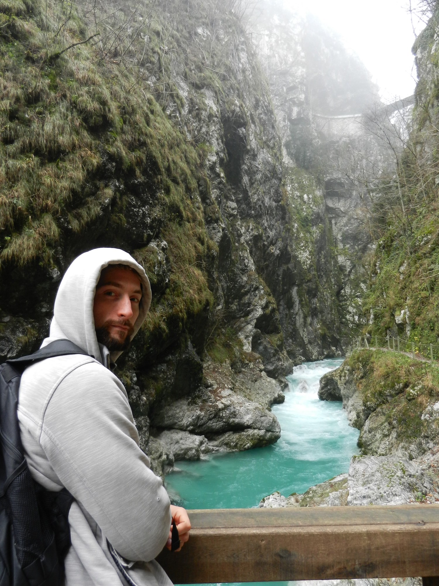

“In the middle of the journey of our life I found myself within a dark woods where the straight way was lost.” ― Dante Alighieri, The Inferno
From the top of Šentviška Gora Plateau, Ashleigh and I descended along a walking trail that had been altogether obscured by a passing storm. Felled trees littered the path like strewn match sticks and we had to scramble our way through like an obstacle course. We were staying with English expatriate Helpx hosts who lived in a terribly remote region of Slovenia, amidst the tiny settlement of Ponikve– a carpenter and a hairdresser who decided to make a new home in a strange country. Unable to get a ride, and with no other way to get off the mountain, we set off on our weekend adventure on foot in an attempt to get to the beautiful Tolmin Gorge, about 15 kilometres away.
{kind=link}
After losing the path a couple times, we finally descended the 700-metre slope down into the valley and the nearest town. From there we stuck out our thumbs and hoped to God that some kind-hearted soul would deem us pathetic enough to give a ride. After a surprisingly short period of time, a large van pulled off to the side of the road and motioned for us to hop in. By chance, this nice, young lady lived in Tolmin and was happy to give us a lift straight there. The walk from Tolmin to the gorge was simple enough, with no fallen trees to clamber over, and to our delight we arrived at our destination in no time!
{kind=link}
{kind=link}
The steep and twisting pathway along the raging, azure waters of Tolmin Gorge was a splendid hike. The gorge, one of Slovenia’s natural jewels within Triglav National Park, was highly recommended to us and not too far from where we were staying in Ponikve. The Tolminka river, with its startling, bright blue waters, has carved beautiful caverns out of the surrounding limestone. Hot, thermal springs feed into the river from below while the Devil’s Bridge spans above at a dizzying height over the gorge. The scenery and the greenery were spectacular– the beauty of Tolmin Gorge was almost supernatural.
{kind=link}
{kind=link}
Whilst zipping through the Triglav Park’s spider-web of trails, we stumbled across a sign pointing towards a Javorca Church, six kilometres uphill. Feeling unusually energetic, we decided to embark on this quest, hiking up and out of the Tolminka valley to the church memorial.
“Javorca Memorial Church of the Holy Spirit” was built in 1916 by soldiers of the Austro-Hungarian army to remember their fallen comrades from the First World War. The interior of this wooden church is painted with splendid, vibrant colours while the exterior is adorned with oak plaques bearing names of those Austro-Hungarian soldiers slain in battle. From this historical monument we got spectacular views of the surrounding, snow-capped mountain peaks.
Despite our weariness from the Javorca hike, we still had one more sight to see nearby that I could not pass up: the Cave of Dante!
{kind=link}
“Ye who enter, abandon all hope.”― Dante Alighieri, Inferno
{kind=link}
The Inferno, part one of The Divine Comedy, is a vast and detailed description of the 9 Circles of Hell on the poet’s journey through the three levels of the afterlife (Hell, Purgatory, and Heaven). In 1319, this Italian poet, Dante Alighieri, visited the Patriarch of Aquileia in Tolmin, where he supposedly got his inspiration for The Inferno after exploring a nearby cave in Tolmin Gorge.
I was determined to examine the cave of Dante up close and was moderately prepared, bringing a pair of flash lights and a stick of chalk to mark our way. The cave system is reportedly 1500 metres long with various turning passageways and my worst fear was that we would get lost in the dark. As we entered the mouth of the cave I swore I could feel the hot winds of Hell blow up to greet me.
The cave was quite warm, possibly due to the geothermal activity in the area, and the descent began at an easy pace. It wasn’t too far down the tunnel when we arrived at our first obstacle: a steep cliff where the tunnel turned upwards into the darkness. We had no ropes, but luckily someone had carved little handholds into the smooth stone that made climbing possible.
{kind=link}
As we moved slowly up and down through tumultuous, twisted passageways, I scratched a white arrow on the wall with my chalk to mark our return route. Several times we had to either climb or carefully descend steep slopes where a previous spelunking team had carved more footholds. On our journey through the Inferno we witnessed many strange rock formations, wide caverns, and even a few bats slumbering on the ceiling. Finally we came to a vast cavern that thinned as it climbed upwards and ended at a yawning hole that went down and down forever. Had I found the entrance to Hades here? Shivering, I quickly crept back down the passageway and we began to return to the surface. To our distress, none of the white arrows I had drawn could be found, and the tight grip of panic took its hold as we searched through blackness for our return passage. Fortunately for us we found older arrows drawn by other explorers and using those we were able to make our way back to the surface. By the time we exited Dante’s Inferno, darkness in the outer world had descended and the crisp, night air was there to greet us.
{kind=link}
“From there we came outside and saw the stars” ― Dante Alighieri, The Divine Comedy
{kind=link}
After having such magnificent adventures exploring Tolmin Gorge, Javorca Church and Dante’s Grotto, we still had to journey home and night had already fallen. The only bus we could catch back left Tolmin at 9:00 PM, and after that we would still have to hike up 700 metres to the top of Šentviška Gora Plateau and find our way through the dark to Ponikve. The night grew grim and the rain started pouring as we stepped off the bus in the valley below our destination. There was nothing left to do but find the trail and begin one last adventure up the mountainside.
In the dark the trail was hard to find, and there were many turns that we didn’t remember. Sometimes the cliff face dropped sharply off the edge of the trail and we had to be extremely careful not to slip on the wet ground. At last we came to a sign pointing to Ponikve, and we found our way back to where the trees had been blown over in the storm. We spent many frustrating hours clambering over slimy logs, soaked to the bone and covered in mud, but eventually we climbed that last stretch and came up to open fields.
It was midnight by the time we stumbled through the door to our home in Ponikve, soggy, dirty, cold and miserable, but we had a story to tell...
“And as he, who with labouring breath has escaped from the deep to the shore, turns to the perilous waters and gazes.” ― Dante Alighieri, The Divine Comedy
{kind=link}